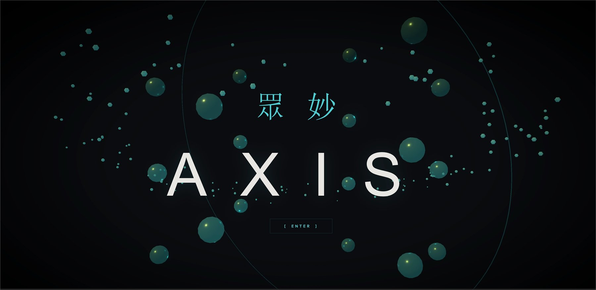
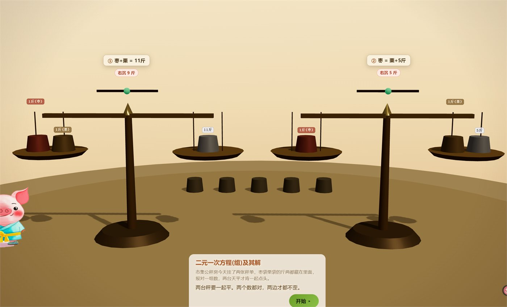
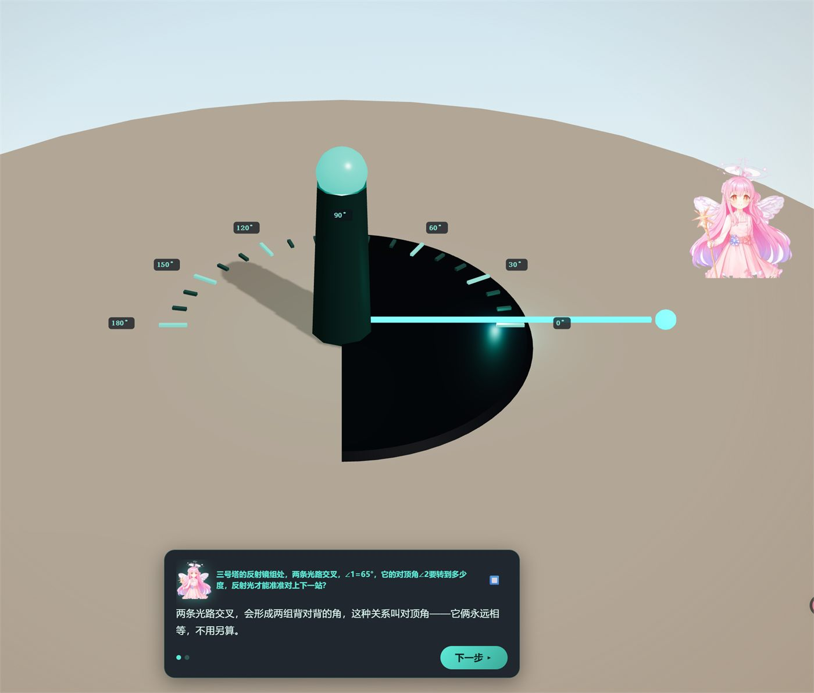
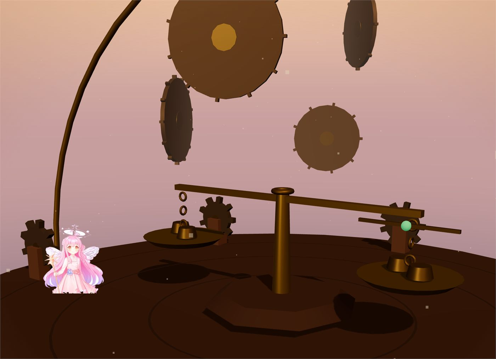
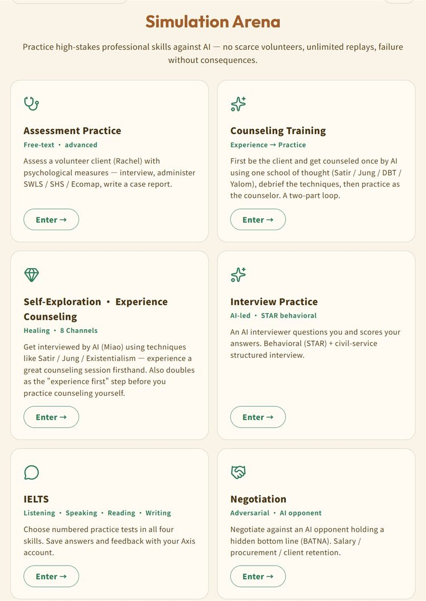
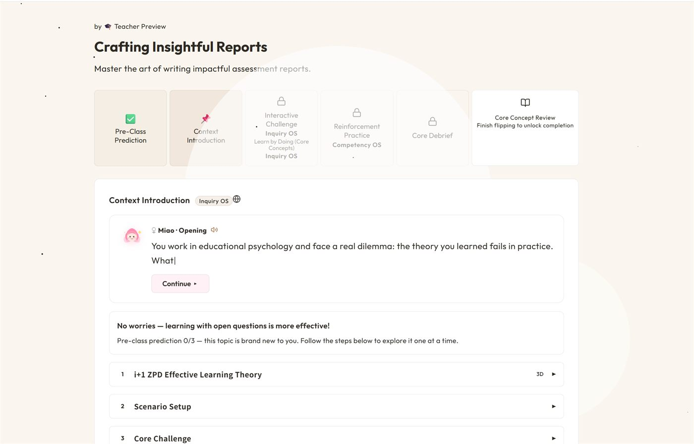

Featured Work
Axis AI
Teachers upload the material they already have. The platform turns it into a lesson you play. My job is the point where content becomes gameplay.

Overview
Axis is a platform that turns instructor materials into interactive 3D lessons for desktop and mobile. A teacher uploads the deck they were going to present; the platform rebuilds it as a lesson the student plays through.
The platform carries games for several different age groups, so “a lesson” is not one format. My work sits at the point where content becomes gameplay: I contribute to product planning, design learning flows and mechanics, work on UI and 3D presentation, test courseware, and push back on the product when a lesson still feels like a slideshow with a game skin.
A 3D lesson is not automatically a game. If the interaction is just walk to a question and click an answer, the 3D space is decoration.
What I do
- Product and course planning. Shaping learning flows, interaction structure, and how an individual lesson should behave.
- Game and interaction design. Designing mechanics, feedback, and player flow around specific learning goals.
- UI and website design. Proposing and refining how the platform presents information and entry points.
- Courseware and QA. Testing English-course flows, finding high-impact bugs, and validating fixes across navigation, localization, reports, and interaction logic.
- 3D art and environments. Building lesson scenes and visual assets.
- Content and promotion. Running the Xiaohongshu account, and recording, editing, and publishing the platform demos myself.
- Team and production. Coordinating tasks and communicating across design, art, and engineering when a feature crosses disciplines.
Make the concept itself the mechanic
My rule for a 3D lesson is that the mechanic has to carry the explanation. If you can strip the 3D away and lose nothing, the 3D was decoration.
A lesson on squares or quadratic relationships can map the number onto area. Instead of only reading the formula, the player changes the side length, watches the area grow, and compares the result across shapes. The point is not that the concept looks nicer in 3D. It is that the player understands it by manipulating the relationship.
The same logic drives the scenes below. In the balance lesson the two pans have to agree before the answer resolves, so the learner is solving a system rather than picking an option. In the geometry lesson the beam of light rotates against a protractor, and the pair of vertically opposite angles stays equal while you turn it, so the invariant becomes something you watch hold rather than something you memorise.


Left: two scales must balance together, so the learner solves a pair of equations rather than one. Right: the rotating light beam makes the vertically opposite angle an invariant you can see hold.

A lever scene from the same family of lessons. Keeping one physical metaphor across topics means the learner re-uses an interaction they already understand.
IELTS: from four skill buckets to a learning loop
The original IELTS direction separated practice into listening, speaking, reading, and writing. I thought that still treated the product like a content library: it knew which category a user picked, but not what that person already knew, what they were missing, when they were taking the exam, or how much time they could realistically study.
I looked at the language-learning apps people actually use and kept hitting the same wall. Even when you can choose a starting difficulty, the path is still generic. I might already know part of the language and still be dropped into a course built for someone else.
So my proposal starts with diagnosis and then builds the plan around the learner:
- Initial diagnostic. Start from what the learner actually knows instead of forcing everyone down the same path.
- Deadline-aware planning. If the exam is in three months, turn that deadline into a three-month study cycle with concrete daily work.
- Adjustable schedule. Let the learner tell the system when real life changes: rest at weekends, or add extra practice. The plan is not fixed.
- AI study buddy. An optional companion layer for reminders and continuity. Progress earns points that buy lightweight cosmetic customization such as outfits or hairstyles.
- Optional social competition. A leaderboard can make progress visible. Any system-generated participants in an early-stage product should never be presented as real users.
- Speaking practice. A digital human or other approachable avatar to shorten the jump between studying alone and speaking under exam pressure. Some learners are strong until an examiner is in front of them; letting them choose a less intimidating practice partner is the point.

The existing IELTS module prototype, shown inside the platform’s practice arena.
Psychological assessment as detective work
For a pilot in a Northeastern doctoral course on psychological assessment, I reframed the assessment process as detective work. The mapping was deliberate rather than decorative: assessment already asks the learner to gather evidence, ignore noise, understand a person in context, and connect information across sources. I designed the interactions around that reasoning process instead of adding a generic game layer on top.
- Runner mini-game. The player steers a folder, collects evidence, and dodges distractors, turning information filtering into an immediate physical action.
- Visual-novel sections. The learner builds an understanding of the digital client, Jordan, through context and dialogue instead of reading the whole case at once.
- Evidence board. Clues are connected on a corkboard with red string, so the learner actively builds the relationships rather than being handed them.
The design goal throughout: the play structure should match the logic of assessment, not simply make the lesson louder.

The pilot course flow. Status: pilot produced; interface and interaction flow can be shown.
Embodied AI learning companion
I have also been exploring what happens when the assistant leaves the screen. For an embodied learning-companion concept, I designed the form around how a child might actually live with the object: small enough to carry, rounded, soft, touchable, stable on a desk, and comfortable enough to keep nearby at bedtime.
I did not want a mini industrial robot. The form language is deliberately non-threatening, with no sharp structures and no direct copy of a real animal or an existing character IP. The longer-term use case is everyday learning support and simple routines, with future exploration of interaction patterns that may also suit autistic children.
Montessori observation assistant
I do not think the right product pitch is “AI replaces the Montessori teacher.” Observation is already how Montessori teachers read readiness, attention, material choice, and persistence, and how they decide when to introduce the next lesson. A better role for AI is to stay out of the child’s way and make that observation easier to keep over time.
The concept is an AI-assisted observation and documentation tool: record patterns during uninterrupted work, organise observation notes, and cut the repetitive documentation. The teacher stays responsible for interpretation and for the next instructional decision.
Project support
I used this project as the basis of my application for Northeastern University’s PEAK Fellowship, and I am currently using it in an ongoing NEA Grants for Arts Projects application.